About Me
Hi, I'm Haopeng Deng, an undergrad at Guangzhou Maritime University, passionate about traffic flow and urban mobility, and with a particular interest in how Connected and Autonomous Vehicles (CAVs) can reshape the system. Currently, I work on mixed-flow dynamic traffic assignment and learning-based control frameworks that integrate optimization and stochastic modeling. My long-term goal is to build mobility systems that are human-centric, resilient and sustainable, using tools from traffic engineering, data science and beyond.
Interests & Skills
Research Interests
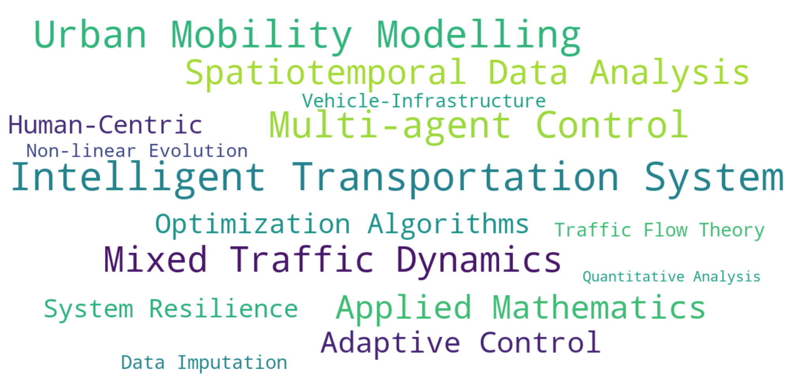
Core Skills
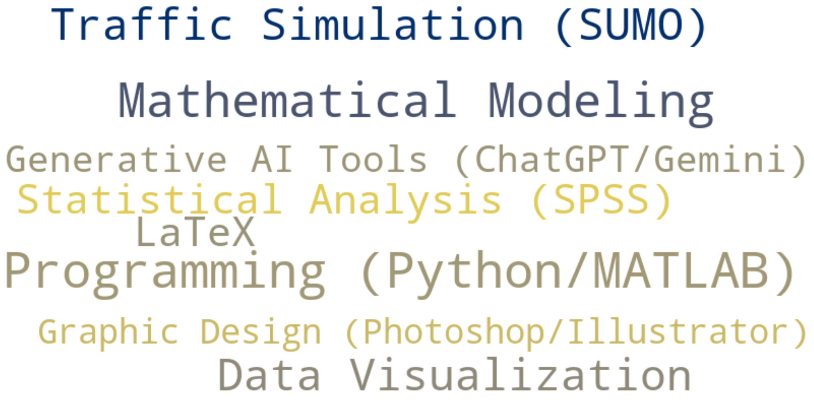
Selected Publications
Conference Papers
- Deng, H., Zheng, F., & Xia, X. (2026). SpinFlow: A Physics-Informed Spin Field Framework for Traffic Phase Inference and Transition Detection. The IEEE International Conference on Intelligent Transportation Systems (ITSC). [Arxiv]
- Xia, X., Deng, H., Tang, J., et al. (2026). Dynamic Traffic Assignment under Mixed Traffic: Modeling, Evolution, and Solution Approaches. International Conference on Artificial Intelligence and Autonomous Transportation (AIAT). Springer Nature. (Oral Presenter). [DOI]
- Xia, X., Deng, H.*, Ye, Y. (2026). Fundamental Diagram Modeling and Simulation of Mixed Traffic Flow Considering Functional Degradation. Accepted in The 26th CICTP Conference.
- Deng, H., Zheng, F., Ma, K., et al. (2025). Adaptive Truncated Schatten Norm for Traffic Data Imputation with Complex Missing Patterns. The 25th COTA International Conference of Transportation Professionals (CICTP). American Society of Civil Engineers. (Best Poster Award). [DOI]
Journal Articles
- Xia, X., Deng, H., Tang, J., et al. (2025). Dynamic Traffic Assignment under Mixed Traffic: Modeling, Evolution, and Solution Approaches. Journal of Transport Science and Engineering. (Cover Paper). [DOI]
- Deng, H., Tang, J., Zhan, L., et al. (2025). Research on Traffic Governance Optimization in Kaiping City Based on a GRA–FCE Integrated Framework. Journal of Transportation Engineering. [DOI]
- Deng, H., Ma, K., Zhan, L., et al. (2025). Structural Equation Modeling of the Relationships among Traffic Safety KAP in Small-Medium Cities. Journal of Transportation Engineering. [DOI]
- Wang, Q., Deng, H., Deng, H., et al. (2025). Research on the Incentive Mechanism of a Comprehensive Carbon Pricing System for Emission Reduction and Carbon Sink Enhancement. Journal of Guangzhou Maritime University. [CNKI]
Research Experiences
Guangdong Provincial Special Fund for Science and Technology Innovation Strategy
Cooperative Game-Based Network Traffic Assignment Mechanisms for Enhancing Urban Transportation Efficiency
I lead a project on cooperative game-based traffic assignment mechanisms for urban transportation efficiency. I developed a unified Dynamic Traffic Assignment model that decouples CAV adoption into two dimensions—Automation Level and Connectivity Level—and positions the system along a continuous spectrum between user equilibrium and system optimum within this AL-CL space. I also proposed the AMPAS algorithm to efficiently solve DUE, DSO, and UE-SO mixed equilibria, achieving 27.2% faster convergence than gradient projection on medium-scale networks. Additionally, I authored a systematic review on mixed-traffic DTA models, synthesizing findings from over 120 studies on equilibrium evolution, algorithms, and research trends. I also coordinate task delegation, track milestones, and mentor junior researchers.

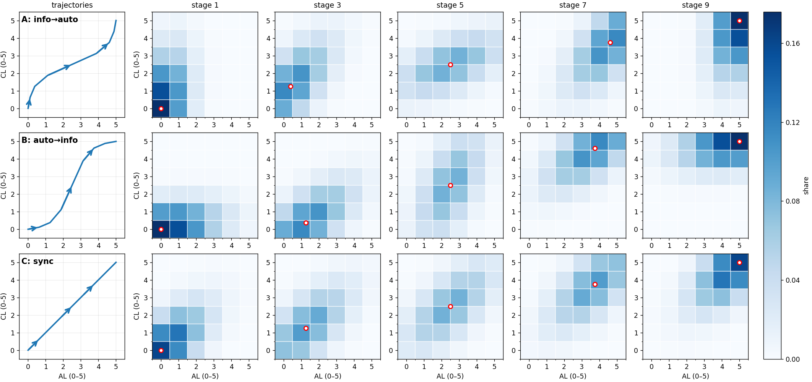
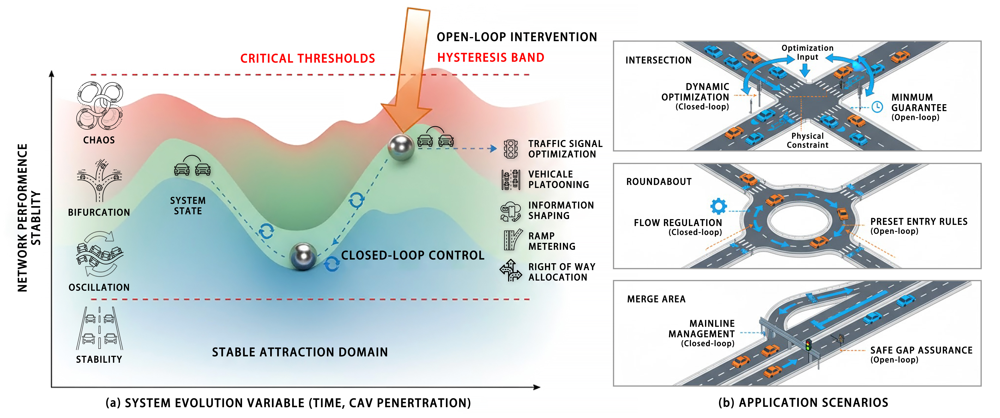
Guangdong Provincial College Student Innovation and Entrepreneurship Training Program
Intelligent Recognition of Urban Traffic Equilibrium States under Air-Ground Collaborative Monitoring
As a core member, I contributed to developing an intelligent system for recognizing urban traffic equilibrium states, integrating data from roadside sensors, UAVs, and probe vehicles. My team aimed to construct high-dimensional traffic flow tensors and explore data loss structures—including element-wise, fiber-wise, and mixed loss—to improve data recovery algorithms. I developed an adaptive truncated Schatten norm-based model (LRTC-ATSN) for recovering traffic data with complex missing patterns, improving MAPE by 10.6% and RMSE by 6.1%. I also proposed SpinFlow, a physics-informed model driven by a latent spin field to capture competitive equilibrium among traffic phases, combined with an Expectation-Maximization algorithm to infer synchronized flow emergence from aerial trajectory data.
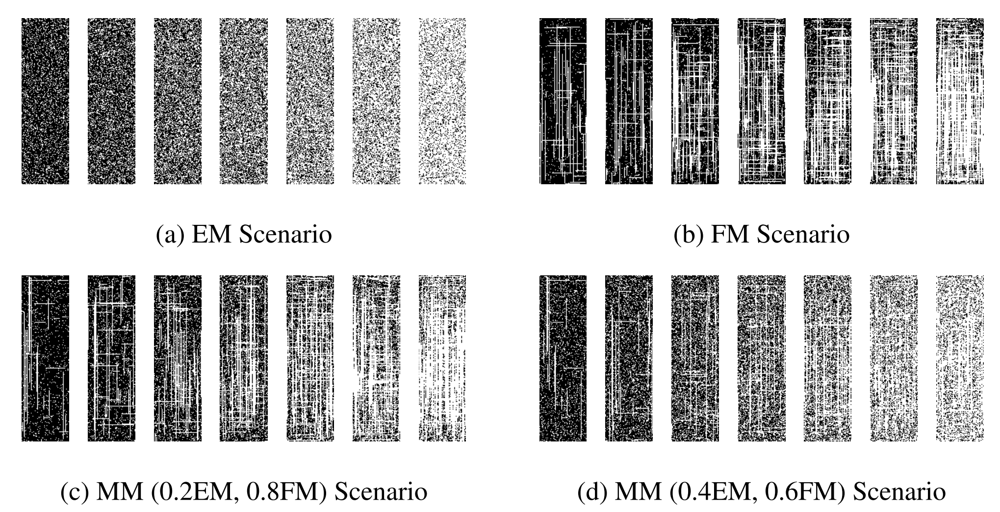
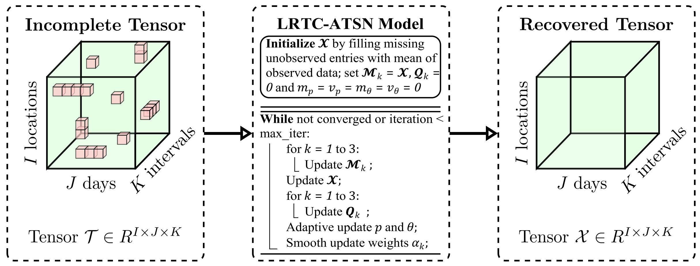
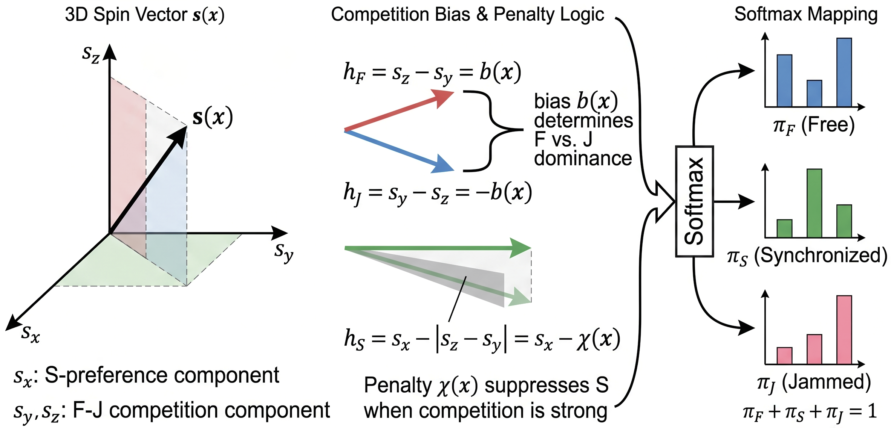
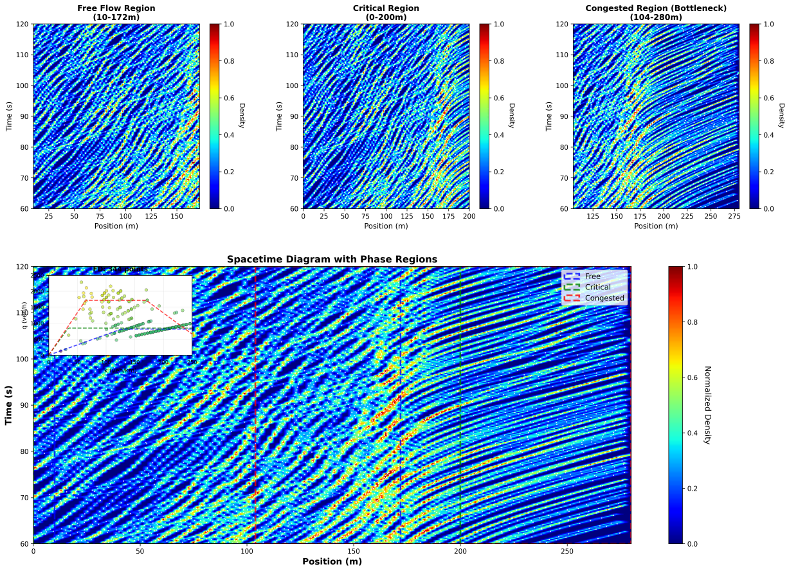
High-Quality Development Project for Hundred Counties, Thousand Towns, Myriad Villages
Investigation and Research on Traffic Safety and Planning in Kaiping City
I led a team investigating traffic safety and planning in Kaiping City, working with the Kaiping Municipal Transportation Bureau to analyze accident and violation data and identify crash hotspots and hazard types. My team conducted on-site surveys, interviews, and drone photography to gather data on traffic flow, vehicle management, pedestrian movement, and infrastructure. I applied SPSS and LLM tools to analyze the survey and interview data, identifying recurring issues and proposing solutions that were later adopted by the Municipal Transportation Bureau. I also authored two papers from this project: one using Structural Equation Modeling to examine the relationship between traffic safety behavior and attitudes, and another assessing Kaiping's traffic governance through Grey Relational Analysis and Fuzzy Evaluation.
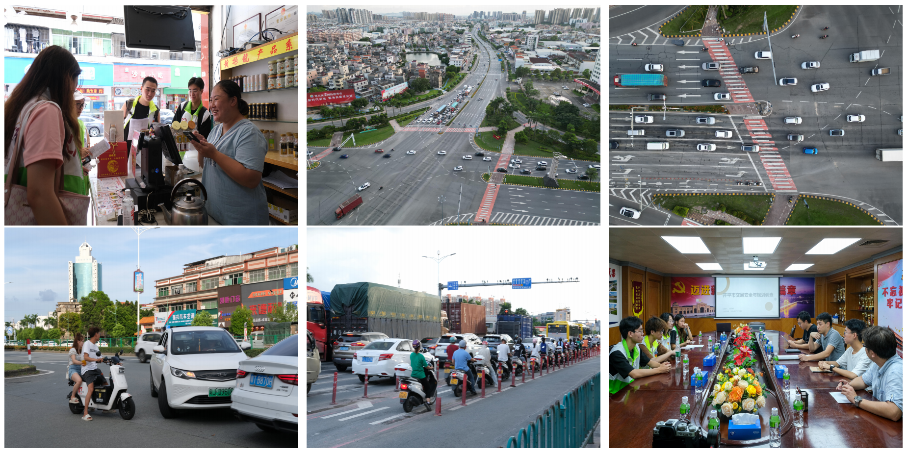
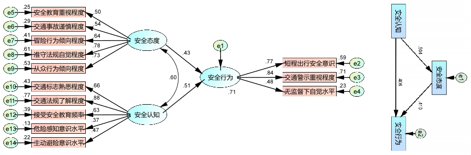
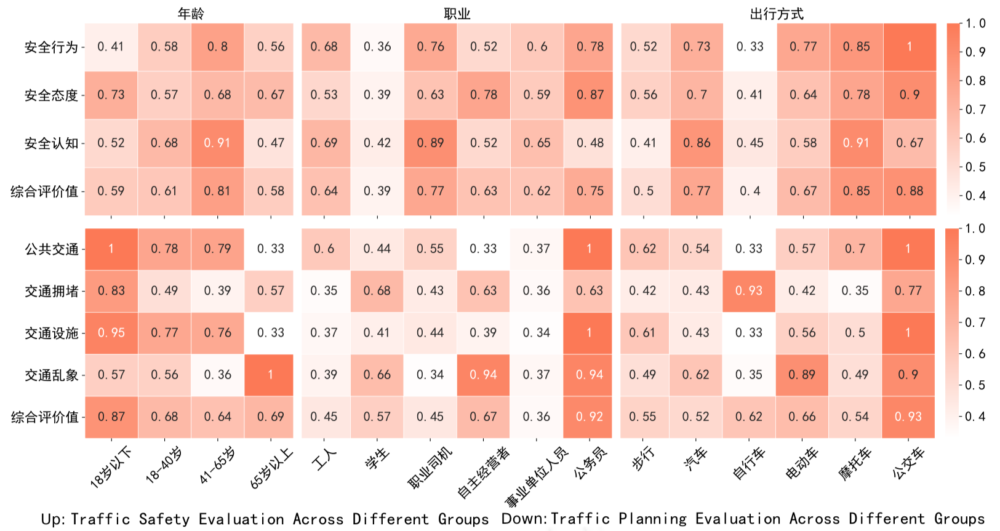
Academic Exchange
Smart Sustainable Cities and Transportation Winter School
Tsinghua University & Technical University of Munich12/2025
Selected as one of 67 participants, I completed 11 modules on data-driven modeling, digital twins, and autonomous driving. It helped me see transportation problems not just as technical optimization tasks, but as societal systems, where algorithmic design needs to account for real-world uncertainty, human behavior, and equity.
Awards and Honors
- Best Poster Award (International), The 25th CICTP Conference, COTA 2025
- Meritorious Winner (International), Interdisciplinary Contest in Modeling (ICM), COMAP 2025
- Third Prize (Provincial), 18th "Challenge Cup" National Students' Academic Works Competition 2025
- Yang Hanlin Scholarship (Top 0.2%, 3/1210), Guangzhou Maritime University 2025
- Third Prize (Provincial), China Undergraduate Mathematical Contest in Modeling 2024
- Bronze Award (Provincial), FLTRP · ETIC Cup English Writing Contest 2023